Professionalism
Actions, behaviors and attitudes, from novice to expert.
What it means
Professionalism (ATI): the actions, behaviors and attitudes that reflect the profession's core values, ethical principles and regulatory guidelines. Unprofessionalism: conduct that doesn't follow the standards of practice or the Code of Ethics.
Inner processes
Your own beliefs, values, attitudes, accountability, integrity and ability to reflect.
Outer processes
How you act: following the code of conduct, communicating clearly, client-centered care, continuing education, professional organizations.
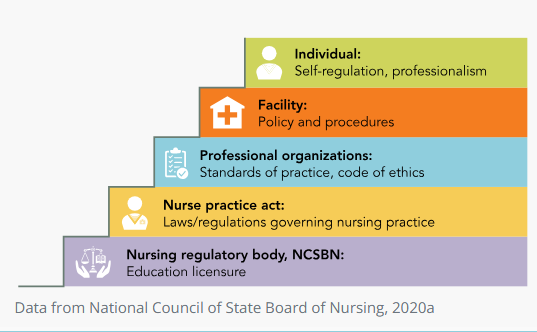
Benner's novice to expert (1982)
| Level | Description |
|---|---|
| Novice | No experience; must be taught the rules and steps, with rationale and consequences |
| Advanced beginner | Shows skills but still needs prompting and support |
| Competent | Makes plans and decisions; works efficiently and safely |
| Proficient | Sees the whole situation from start to finish; adapts to the unexpected |
| Expert | Mastery; multitasks easily and acts fluently without conscious effort |
"Nurses Always Climb Past Excuses": Novice, Advanced beginner, Competent, Proficient, Expert.
Accountability vs responsibility
Accountability
A legal obligation with a moral and ethical commitment to do the right thing every time, in every situation. "If not you, then who?"
Responsibility
An obligation to do work, duties or tasks using sound professional judgment.
Responsibility is the task; accountability is answering for it. You can delegate a task, but you stay accountable for it.
Quick check
A nurse sees the whole situation and adapts when things change, but still thinks it through. Which Benner level?
Proficient.
Which term is "a legal obligation with a moral and ethical commitment to do the right thing every time"?
Accountability.
Leadership & the organization
Leadership styles, nursing roles, chain of command and shared governance.
Leadership styles
A leader influences and inspires; a manager organizes the work. One person can be both.
| Style | How it works | Pros | Cons |
|---|---|---|---|
| Transactional | Clear standards; rewards and punishments | Structure; short-term goals met | Limits creativity; motivation tied to rewards |
| Transformational | Inspires with vision and passion | Growth and teamwork | Can cause burnout; needs constant communication |
| Laissez-faire | Hands off; gives resources and lets staff work | Great for skilled staff | Poor results with inexperienced staff; leader seems absent |
| Bureaucratic | Strict rules and policies | Safety and quality through rules | Stifles creativity; negative atmosphere |
| Situational | Changes style to fit the situation | Flexible | Hard to apply to everyone |
Transactional trades (do this, get that). Transformational transforms (inspires). Laissez-faire lets it be.
The nurse's role in the organization
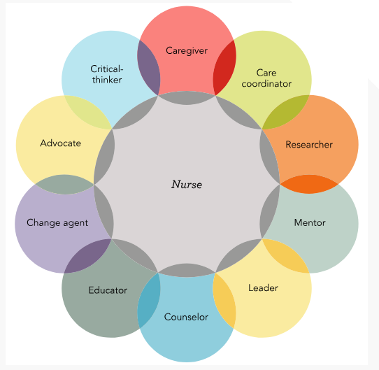
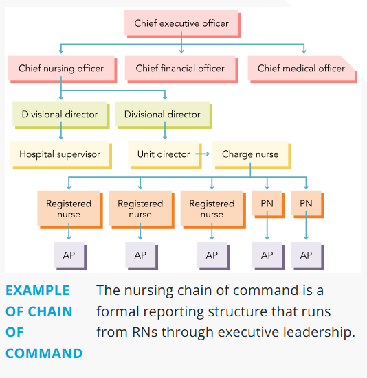
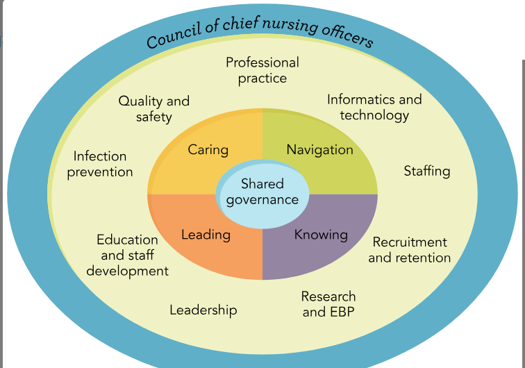
- Roles: caregiver, care coordinator (case manager), educator, advocate, counselor, leader, mentor, researcher, change agent, critical thinker.
- Chain of command: report a concern to the next person up (for example charge nurse, then unit director, then supervisor) when it isn't resolved. AP means assistive personnel; PN, practical nurse; RN, registered nurse.
- Shared governance: nurses at every level share decision making about practice, quality and staffing.
Quick check
A manager lets an experienced team decide how to run the unit and steps in only when asked. Which style?
Laissez-faire.
A nurse's concern isn't resolved by the charge nurse. What next?
Follow the chain of command to the next level, such as the unit director.
Ethics
Principles, values, and how a team works through a dilemma.
Terms
- Ethics: principles that guide the moral behavior of a person or group. Morality: one person's own sense of right and wrong.
- Code of Ethics (ANA, American Nurses Association): rules for nurses on client privacy, conduct and behavior that protect clients and the profession.
- Nightingale Pledge (1893): a nursing oath based on the Hippocratic Oath, often recited at pinning; stresses ethics, safety and avoiding harm.
Ethical principles
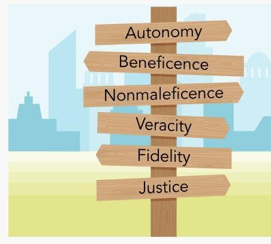
| Principle | Means | Example |
|---|---|---|
| Autonomy | The client makes their own informed decisions | Supporting a client who declines surgery after hearing the risks |
| Beneficence | Doing good; acting in the client's best interest | Getting pain medication for a client in pain |
| Nonmaleficence | Doing no harm | Checking allergies before a new medication |
| Veracity | Telling the truth | Answering a client's questions honestly |
| Fidelity | Keeping promises; being faithful to commitments | Coming back with the blanket you said you'd bring |
| Justice | Treating every client fairly | The same quality of care regardless of insurance |
Bene = good, mal = bad. Beneficence does good; nonmaleficence avoids bad (harm). Veracity = verity (truth). Fidelity = faithful (keep your word).
Professional nursing values
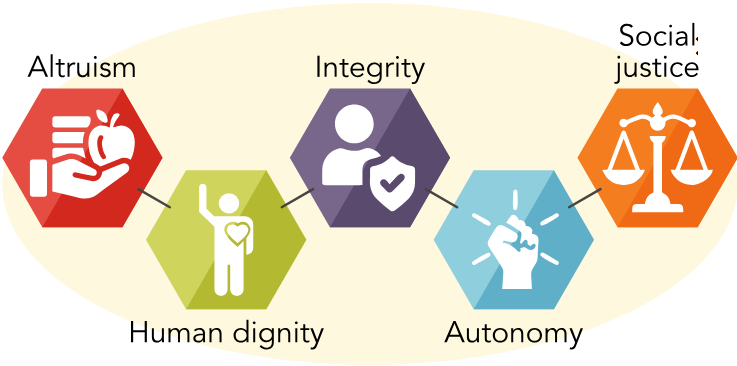
| Value | Means |
|---|---|
| Altruism | Selfless concern for others |
| Human dignity | Respect for every person's worth |
| Integrity | Honesty and strong moral principles |
| Autonomy | Respecting a person's right to decide |
| Social justice | Fairness and advocacy for equal care |
Ethical dilemmas and decision making
An ethical dilemma is a choice where no option may be fully ethically acceptable. Ethical decision making works through the options using ethical principles.
- Define the issue and assess risks: recognize when something feels off; handle urgent legal or reporting issues
- Identify stakeholders: everyone relevant to the situation
- Gather information to inform the decision
- Reflect on personal biases about the people involved
- Identify core principles and standards: professional codes, plus personal, religious, legal or organizational ethics
- Consult resources: research, decision-making models, trusted colleagues
Quick check
The nurse checks allergies before giving a new medication. Which principle?
Nonmaleficence (do no harm).
A client declines a recommended surgery and the nurse supports the choice. Which principle?
Autonomy.
Two parents disagree about withdrawing life support. What resource does the nurse bring in?
The ethics committee.
Legal considerations
The laws, consents and reporting duties nurses work under.
Laws to know
| Law | What it does |
|---|---|
| EMTALA (Emergency Medical Treatment and Labor Act) | Everyone gets emergency care regardless of insurance or ability to pay |
| HIPAA (Health Insurance Portability and Accountability Act, 1996) | Protects a client's PHI (protected health information) |
| HITECH (Health Information Technology for Economic and Clinical Health Act, 2009) | Encourages facilities to use electronic health records safely |
| HIPAA rule | Does |
|---|---|
| Privacy Rule | Sets the standards for how PHI in any form can be used and shared |
| Security Rule | Sets safeguards for electronic PHI |
| Breach Notification Rule | Requires telling clients when unsecured PHI is breached |
Common HIPAA violations: unsupervised access to PHI, careless data disposal, denying clients access to their own PHI, disclosing PHI, losing PHI. Discussing a client in the elevator, posting a client's wound on social media, or opening the chart of a client you aren't caring for are all violations.
Criminal, civil and tort law
Criminal law
Offenses against the public (practicing without a license, abuse); proven "beyond a reasonable doubt."
Civil law
Disputes between individuals (negligence, malpractice); aims to compensate the victim. A nurse can face both for the same incident.
| Tort | Type | Means |
|---|---|---|
| Negligence | Unintentional | Failing to act as a reasonable, prudent person would |
| Malpractice | Unintentional | Negligence by a professional, such as a nurse |
| Assault | Intentional | Threatening to touch or harm |
| Battery | Intentional | Touching without consent |
| Invasion of privacy | Intentional | Sharing private information without permission |
| Defamation | Intentional | False statements that damage a reputation (slander spoken, libel written) |
Assault is the threat; battery is the touch.
The nurse's legal duties
| Topic | Key points |
|---|---|
| Informed consent | The provider explains the procedure, benefits, risks and alternatives. The nurse witnesses the signature and confirms the client understands; if they don't, the nurse tells the provider |
| Implied consent | Consent assumed in an emergency when the client can't give it |
| Minor consent | A parent or guardian usually consents for clients under 18, with legal exceptions |
| Advance directives | The client's written wishes for care if they can't decide (living will, health care proxy) |
| Good Samaritan laws | Protect people who give emergency help in good faith, within their training, outside work |
| Whistleblowing | Reporting unsafe or illegal practice (such as a colleague's unsafe medication habits) to authorities |
| Mandatory reporting | Suspected maltreatment (abuse, neglect) and certain communicable diseases must be reported |
| Incident reporting | Report sentinel events and errors; a just culture focuses on fixing systems, not blaming people |
| Social media | Never post client information or pictures |
Workforce issues
Client abandonment (leaving clients without a handoff), nurse-to-client ratios, delegation.
Breaches of practice
Breaking confidentiality, falsifying records, working while fatigued, substance use disorder. The standard of care is shaped by the Code of Ethics, the ANA Scope and Standards, and the Nurse Practice Act.
Quick check
A nurse restrains a client without an order or consent. Which tort?
Battery (touching without consent).
What is the nurse's role in informed consent?
Witness the client's signature and confirm the client understands.
A nurse reports a colleague's unsafe medication practice to administration. What is this?
Whistleblowing.
Which HIPAA rule covers safeguards for electronic records?
The Security Rule.
Communication
Models, styles, and what helps or blocks a therapeutic conversation.
Modes and styles
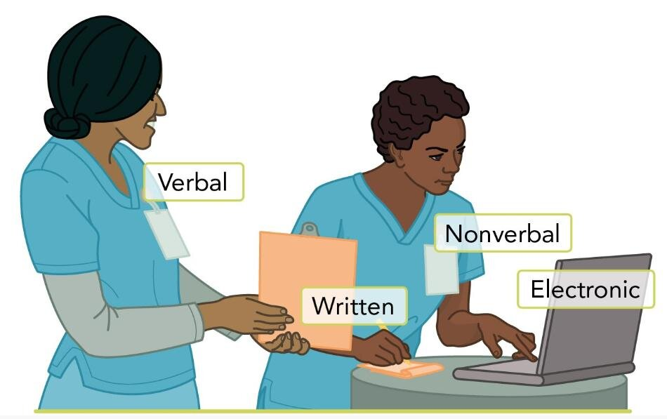
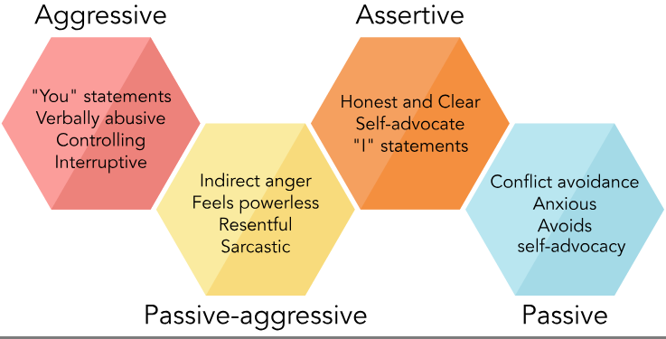
- Levels of communication: verbal (words), physical (body language), auditory (tone, volume, pace), energetic (presence) and emotional (feelings).
- Assertive: honest, clear, "I" statements, respects everyone's needs. Aggressive: "you" statements, controlling, interrupts. Passive: avoids conflict and self-advocacy. Passive-aggressive: looks passive but shows anger indirectly (sarcasm, resentment).
- Influencers: cognitive, intellectual or developmental (dementia, autism spectrum disorder); psychosocial and physiological (hearing or vision loss, fatigue, anxiety, fear); situational and environmental (noise, lighting); cultural and demographic.
Communication models
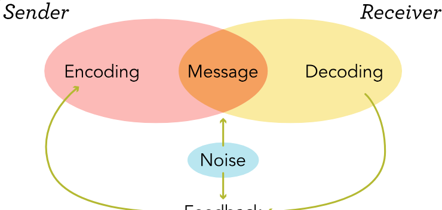
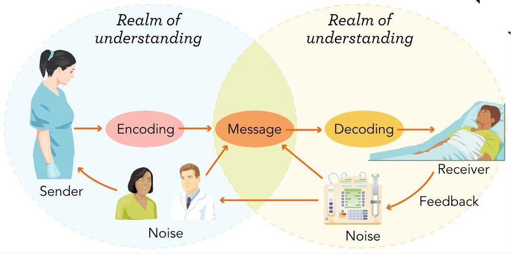
| Model | Parts |
|---|---|
| Shannon-Weaver (1948) | Sender, encoder, channel, decoder, receiver, noise. Linear; noise is anything that gets in the way (distractions, technical problems) |
| Newcomb's ABX | A (sender), B (receiver), X (the topic); communication in a social setting |
| Berlo's SMCR | Sender, Message, Channel, Receiver; one way, no feedback |
Therapeutic vs nontherapeutic
Therapeutic
- Active listening: full attention to words and nonverbal cues
- Open-ended questions: "How would you describe your pain?" "Tell me more about what's worrying you."
- Reflection: mirroring feelings back
- Restating, paraphrasing, summarizing: "So what I'm hearing is that the pain gets worse at night."
- Affirmations; providing information
- Empathy: understanding another's feelings
Nontherapeutic
- Dismissive or challenging, judgmental: "Why didn't you take your medication?"
- Minimizing, false reassurance: "Don't worry, things will get better soon."
- Giving advice: "You should…"
- Changing the subject
- Taking the focus off the client: "I know exactly how you feel."
OARS for motivational interviewing (helping a client make their own positive changes): Open-ended questions, Affirmations, Reflective listening, Summarizing.
"Why" puts clients on trial. Questions that start with "why" sound like blame, so they block communication.
Barriers and how to overcome them
| Barrier | What helps |
|---|---|
| Vision loss | Large print, good lighting, describe what you're doing |
| Hearing loss | Face the client, speak clearly, reduce background noise, write key points |
| Language | A certified medical interpreter, never family |
| Culture | Ask about preferences; eye contact and touch vary |
Quick check
"So what I'm hearing is that the pain gets worse at night and eases with rest." Which technique?
Restating or paraphrasing.
A client says, "I'm scared about my surgery." Best response?
"Tell me more about what's worrying you." It's open-ended and keeps the focus on the client.
Which model includes sender, encoder, channel, decoder, receiver and noise?
Shannon-Weaver.
Which style uses "I" statements and is the most effective?
Assertive.
Collaboration & teamwork
Working with the team, handing off safely, and handling conflict.
Collaborative health care
A client-centered approach where different health care teams work toward a common goal. Interprofessional collaboration: two or more professionals share assessment data, plan care and include the client and family in decisions.
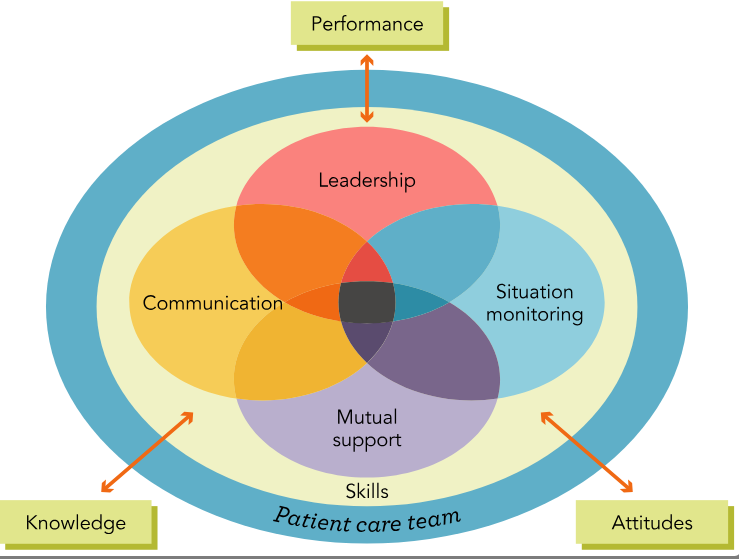
TeamSTEPPS: four key skills
- Leadership: guiding and coordinating the team
- Communication: sharing information clearly
- Situation monitoring: staying aware of the team and client
- Mutual support: helping and giving feedback
IPEC (Interprofessional Education Collaborative) competencies: values and ethics, roles and responsibilities, interprofessional communication, teams and teamwork.
What affects collaboration: individual traits (age, gender, personality, experience), professional roles (unclear roles, overlapping care), how people interact (attitudes, cohesion, shared goals, sharing knowledge) and the organization (resources, network size, leadership).
Consult vs referral; discharge planning
Consultation
A provider asks another provider in a different specialty for advice on the best care. The original provider keeps the client.
Referral
A provider sends the client to a specialist and hands over responsibility for that part of care.
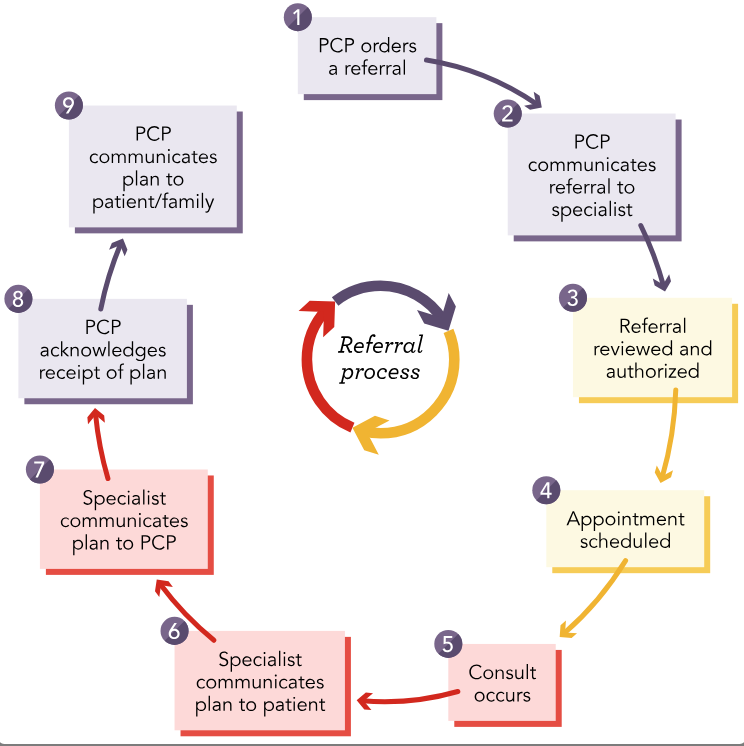
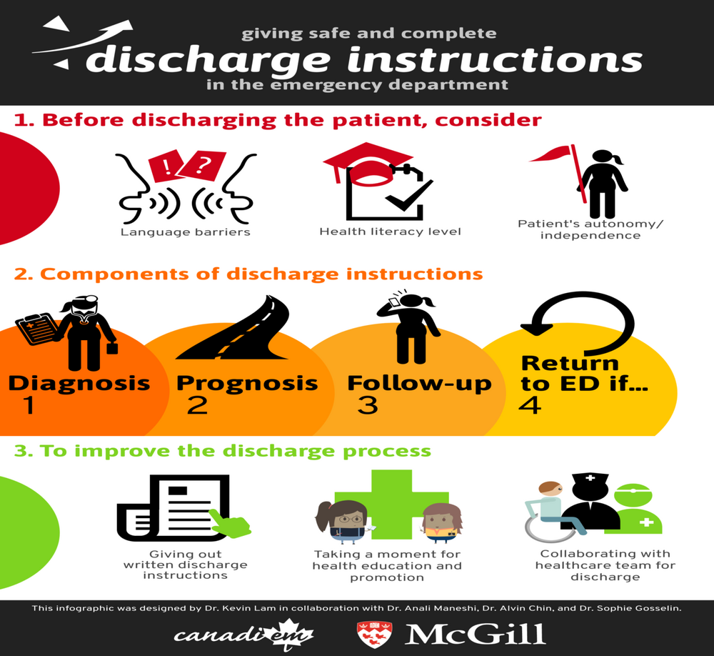
Discharge planning covers: home and the PCP, medications, education, follow-up appointments, when to call the provider, and readiness for discharge.
Methods of communication
- Closed-loop communication: standard terms and steps so the receiver confirms the message was received and understood correctly.
- ISBARR (I-SBAR-R): Identify, Situation, Background, Assessment, Recommendation, Read back. Background is history, medications and advance directives, such as "admitted 2 days ago for pneumonia, history of heart failure."
- Handoff report: a structured report when care passes to another provider; best done at the bedside.
- Care transitions: moving a client between providers or settings. Secure messaging apps (such as TigerConnect) are another channel.
Incivility and conflict
Uncivil behaviors
- Embarrassing someone in front of others; rudeness; gossip
- Eye rolling, sarcasm, a raised voice or bad tone
- Avoiding taking handoff from someone
- Leaving someone out of a care decision
- Calling someone incompetent; refusing to help
Kinds
- Lateral (horizontal) violence: peer to peer
- Vertical violence: between a supervisor and an employee
- Bullying: repeated, unwelcome actions meant to harm, humiliate or distress
- Zero-tolerance policy: no incivility, bullying, harassment or violence at all
Facility changes that prevent incivility: leaders own zero tolerance; onboarding teaches acceptable language and how to report; training for everyone; shared language about workplace violence; a culture of accountability; act on reports and share the results.
Five ways to manage conflict
| Approach | Means | The slide's office-cake example |
|---|---|---|
| Accommodating | Low concern for self, high for others; keeps the peace | "I may be allergic to chocolate, but I only care if you're all happy." |
| Collaborating | Creative, open-minded; a solution everyone accepts | "Three are allergic to chocolate and four are on diets. How about strawberry shortcake?" |
| Compromising | Meeting in the middle; a temporary fix that protects the relationship | "Why don't we get two cakes, a pound cake and a chocolate cake?" |
| Avoiding | Low concern for self and others; leaves it for someone else. Useful when anger is intense | "I don't care about cake. I'll bring my own yogurt." |
| Competing | Uses power or pressure to get the goal | "I'm on a diet and no one can agree, so no cake." |
- Cognitive rehearsal: picturing a stressful situation ahead of time and practicing how to respond.
- Emotional intelligence: recognizing, understanding and managing emotions: self-awareness, self-regulation, motivation, empathy and social skills.
Quick check
A charge nurse keeps belittling a staff nurse. Lateral or vertical violence?
Vertical (supervisor to employee).
Which conflict approach finds a creative answer that works for everyone?
Collaborating.
Consult or referral: the specialist takes over that part of the client's care.
Referral.
Name the four TeamSTEPPS skills.
Leadership, communication, situation monitoring, mutual support.
Documentation & informatics
Charting methods, FACT, military time, and abbreviations to avoid.
Informatics
Using information and technology to communicate, manage knowledge, reduce errors and support decisions. Examples: simulation, clinical information systems, monitors, glucometers, the EHR (electronic health record) and eMAR (electronic medication administration record), clinical pathways, telehealth. Concerns include errors in the EHR or eMAR, personal devices and privacy.
- EHR: a real-time digital chart the whole team can share (history, diagnoses, allergies, test results). Facilities also need a plan for documenting during EHR downtime.
- CPOE (computerized provider order entry): providers enter orders electronically, which cuts errors.
- Health literacy: whether the client can get, read and understand health information. Use plain language.
Documentation methods
| Method | How it's organized |
|---|---|
| Source-oriented | By discipline: nursing, lab, and so on |
| Problem-oriented (POMR) | Around client problems: database, problem list, plan, progress notes |
| SOAP | Subjective, Objective, Assessment, Plan |
| PIE | Problem, Intervention, Evaluation |
| Focus charting (DAR) | Data, Action, Response about one focus |
| Charting by exception (CBE) | Only significant findings or changes from the norm |
FACT
FACT: Factual, Accurate, Complete, Timely. Concrete and objective, precisely measured, thorough, and recorded as close to the time of care as possible.
| Entry from the slides | Shows |
|---|---|
| "Lungs clear to auscultation bilaterally; respirations even and unlabored. No accessory muscle use observed." | Factual: what was observed, no opinions |
| "Oral temperature 38.2 °C (100.8 °F) at 1410; heart rate 112/min; BP (blood pressure) 98/56 mm Hg." | Accurate: exact measurements |
| "SB, RN, administered acetaminophen 650 mg PO (by mouth) at 1420 for headache pain 6/10. Reassessment at 1500: pain 2/10; client denies nausea." | Complete: who, what, when, why and the response |
| "0815: Client reported dizziness when standing. 0820: Assisted to sit; orthostatic vitals obtained. 0828: Provider notified." | Timely: each step charted as it happened |
- Write what you can measure: "Client ate 50% of breakfast," not "ate well."
- Paper chart error: draw a single line through it, label it an error, and add your initials and the date. Never erase or cover it.
- Verbal and telephone orders carry risk: write them down, read them back, and the provider cosigns later.
Military time
A 24-hour clock removes the a.m./p.m. mix-up: is "10:00" 1000 or 2200? It cuts documentation errors and is used everywhere in health care.
- a.m.: drop the colon, four digits: 9:15 a.m. → 0915
- p.m.: add 12: 2:20 p.m. → 1420
- Back to 12-hour: subtract 12 from 1300 and later: 1930 → 7:30 p.m.
More practice is in the Week 9 med math section.
Abbreviations: "Do Not Use"
| Don't write | Problem | Write instead |
|---|---|---|
| U, u | Read as 0, 4 or cc | "unit" |
| IU | Read as IV or the number 10 | "unit(s)" |
| cc | Read as u (units) | mL |
| qd, QD | Read as q.i.d. (four times a day) | "daily" |
| qod, QOD | Read as q.i.d. | "every other day" |
| qhs | Read as every hour | "bedtime" |
| SC, SQ, sub q | SC read as SL (sublingual); SQ read as "5 every" | SUBQ, "subcutaneous" |
| TIW | Read as three times a day or twice a week | "three times weekly" |
| D/C | Discharge or discontinue? | "discharge" or "discontinue" |
| MS, MSO4, MgSO4 | Morphine sulfate and magnesium sulfate get confused | Write the drug name |
| per os | Read as left eye | PO, "by mouth" |
| Trailing zero (5.0 mg) | Decimal missed: read as 50 | 5 mg |
| No leading zero (.5 mg) | Decimal missed: read as 5 | 0.5 mg |
Acceptable abbreviations are on the General and Charting abbreviations flashcards.
Quick check
Which charting method records only findings that differ from the norm?
Charting by exception.
Correct entry: "Client ate well" or "Client ate 50% of breakfast"?
"Client ate 50% of breakfast." It's measurable.
How do you fix an error on a paper chart?
A single line through it, labeled as an error, with your initials and the date.
Convert 11:45 p.m. to military time.
2345.
A provider writes "5.0 mg." What's the danger?
A missed decimal makes it look like 50 mg. Never use a trailing zero.
Evidence-based practice
Why we do what we do, and how to find the best evidence.
What EBP is
EBP (evidence-based practice) uses current research, expert knowledge and what matters to clients to make care decisions. It starts with a spirit of inquiry: wanting to know the best way to care for clients. Real examples: oxygen use in hypoxia, antibiotic stewardship, alarm fatigue protocols, fall prevention guidelines, pain management.
Six steps of EBP
- Identify the problem (and write a PICOT question)
- Search for credible evidence (review of literature)
- Evaluate the findings
- Implement the recommendations
- Review how well they worked
- Disseminate (share) the results
PICOT: Population, Intervention, Comparison, Outcome, Time (optional). "In older adults on a medical unit (P), does hourly rounding (I) compared with usual care (C) reduce falls (O) over 3 months (T)?"
Levels of evidence
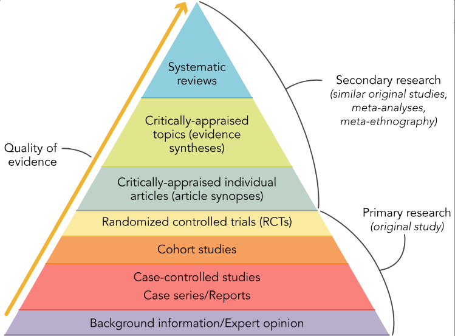
| Research type | Means |
|---|---|
| Quantitative | Numbers that measure the outcome of interventions |
| Qualitative | Narratives that explain people's experiences |
| Mixed methods | Both, combining experiences with generalizable numbers |
| Translational | How best to put EBP into practice across settings |
- Credible sources: scholarly databases, peer-reviewed journals (reviewed by experts with similar training), abstracts; be cautious with websites; cite in APA (American Psychological Association) or AMA (American Medical Association) style.
- Critical appraisal: judging a study's validity, reliability and fit for your question.
- Clinical practice guidelines: evidence-based recommendations for managing diseases and prevention.
- Theory-practice gap: the gap between what research knows and what's done at the bedside.
- Nursing research follows the nursing process: assess (identify the problem), analyze (form the question), plan (design the method), implement (recruit and collect data), evaluate (analyze and share).
Quick check
Which source gives the strongest evidence?
A systematic review of randomized controlled trials.
In PICOT, what is the T?
Time.
A study interviews nurses about how burnout feels. Quantitative or qualitative?
Qualitative.